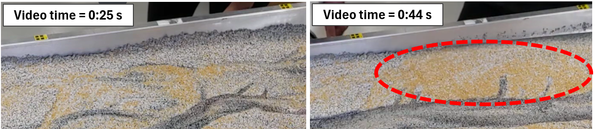
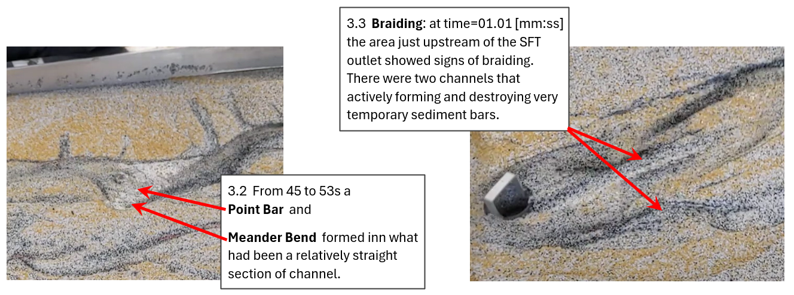
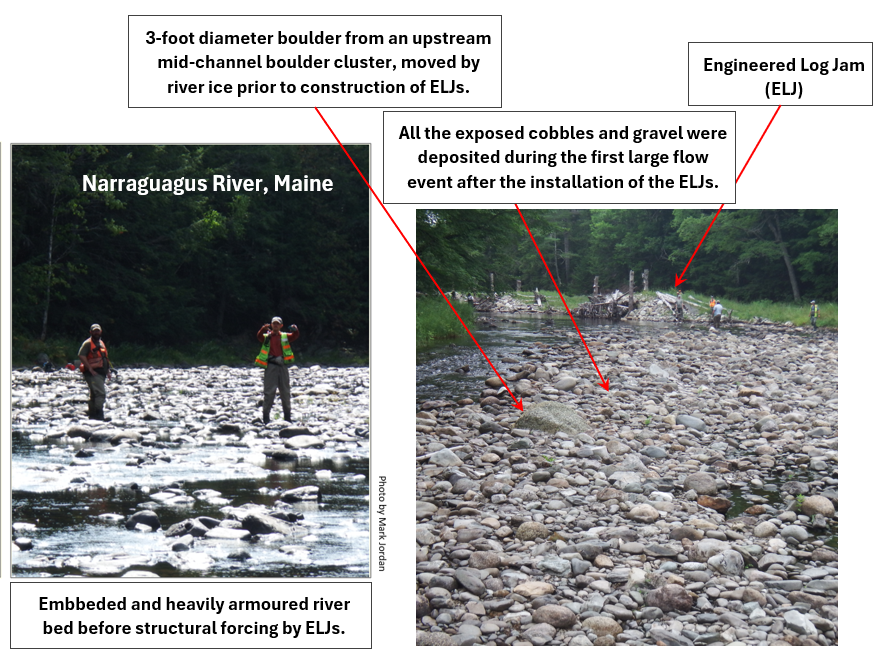

Part 3 - Fluvial Geomorphic Mechanisms
P.3.1: Grain Size Sorting
See Figure 3 for an example of sorted sediments.
At time=25s, the sand matrix at top of the flume (viewers top) was in the form of a ridge with an exposed face of white and black sands. From
time=28s to time=42s, a small flood moved along the top edge of the SFT, as it did so, it washed the ridge from the edge of the flume. As the
flow and sediments moved away from the top edge, grain size sorting occured as the largest fraction (yellow sand) was deposited on top of the sand
matrix.

Figure 3. Grain Size Sorting
P.3.2 & 3.3: Meandering and Braiding
The number of bars in a river cross-section is often related to the channel planform type, with "alternate bars" and "meandering" channels having a
single bar per cross-section, while "braided" rivers have multiple bars per cross-section. The SFT often had two active channels, with one being
more dominate than the other. It appears that for flow rates in the range of low flows to small floods, the SFT was operating in the meandering to
braiding transitional zone. The sandy, weak stream banks (to large for cohesive forces, not large enough for gravity to provide significant resisting
forces and no roots) and the sand matrix high porosity add to the complexity and rapid rate of change of the SFT planforms.

Figure 4. Meandering and Brading River Forms
P.3.4 & 3.5: Avulsion and Chute Cutoff
The process/observation of a channel avulsion was described above (see P.2.1 -2.4 second paragraph). A chute cutoff was from time=1:10 to time=1:14,
see Figure 5 (below).

Figure 5. Chute Cutoff
P.3.6: Structural Forcing
Several years ago I designed and help direct the construction of three Engineered Log Jams on the Narraguagus River in Maine. There were multiple
project objectives, including narrowing the river to help re-mobilize a heavily armoured river bed.

Figure 6. Structural Forcing
P.3.7: Single-Threaded Meandering Channel
For a brief period of time, starting around time=44s, a single channel was.